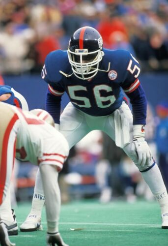

Hello, My name is Matthew John and welcome to my first website.The image down below is one of my favorite American football players of all time, his name, Lawrence Taylor This man, weighing 240 pounds and 6'3 also former NFL superstar who is now considered a legend. Who has a 13 year career in the NFL and has made over 1,000 tackles!
The video down below shows Lawrence taylor's highlights.
Lawence taylor then left the NFL in 1994 leaving a big impact on the game just as he did on his opponents.
.
